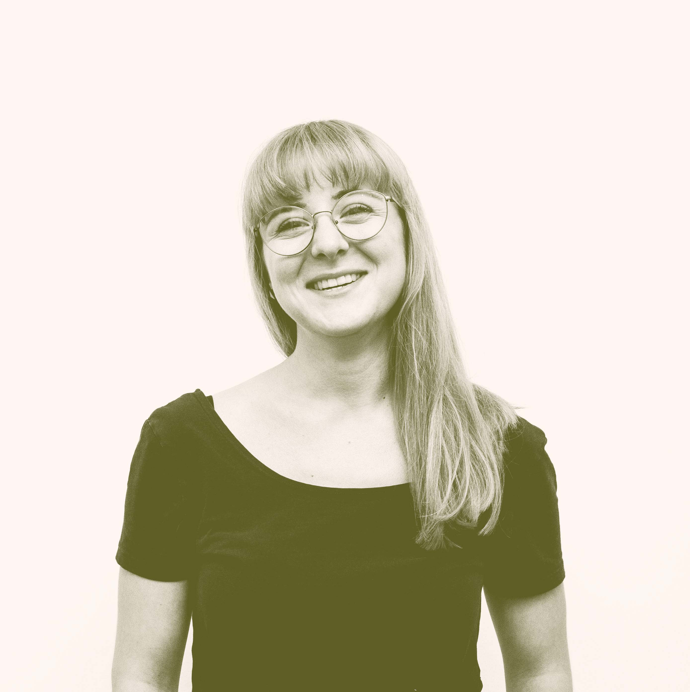

hello, I'm Kata
a digital designer & web developer
In my work I look for simplicity and real connections, because I believe that meaningful change can be only achieved through personal experiences. My aim is to work on projects that respond to relevant problems and make a positive impact on my community.
work
cinema ARTA
independent space for film, culture and community
role: front-end development
2020
visit site
Miercurea Ciuc
citybranding for my hometown is the final project of my studies at UAD
role: visual identity, product design, editorial design, webdesign
2021
read more
Méra World Music Festival
the world music festival of Transylvania, a meeting place for people, music, different cultures and stories
role: front-end development
2021
visit site
georg
Georg Thalhammer is a german organic food producer
role: front-end development, webshop design
2021
visit site
kapocs{
co-working space
role: visual identity, webdesign
2022
read more
see more work
personal projects
film photography
a collection of analog photos from the past few years
see more
wedding stationary
personalised wedding design for a friend
see more